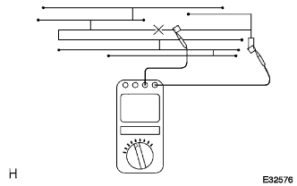
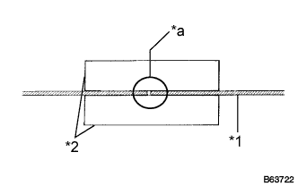
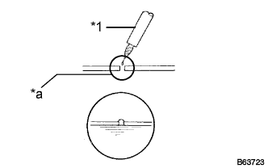

АНТЕННЫЙ ПРОВОД НА ОКОННОМ СТЕКЛЕ > РЕМОНТ |
| 1. ПРОВЕРЬТЕ АНТЕННЫЙ ПРОВОД НА ОКОННОМ СТЕКЛЕ |
| *1 | Антенный провод |
| *2 | Станиоль |
| *3 | Щуп портативного диагностического прибора |
|  |
Измерьте напряжение в середине каждой нити, как показано на рисунке.
| 2. ОТРЕМОНТИРУЙТЕ АНТЕННЫЙ ПРОВОД НА ОКОННОМ СТЕКЛЕ |
|  |
Обработайте концы разорванной нити средством для удаления смазочных, полировочных и силиконовых материалов.
| *a | Место ремонта |
| *1 | Антенный провод |
| *2 | Изоляционная лента |
Наклейте полоску изоленты по обеим сторонам нити для ремонта.
Тщательно перемешайте восстановительную смесь.
|  |
При помощи тонкой кисточки нанесите небольшое количество восстановительной пасты на нить.
| *a | Место ремонта |
| *1 | Тонкая кисточка |
Через несколько минут снимите изоляционную ленту.